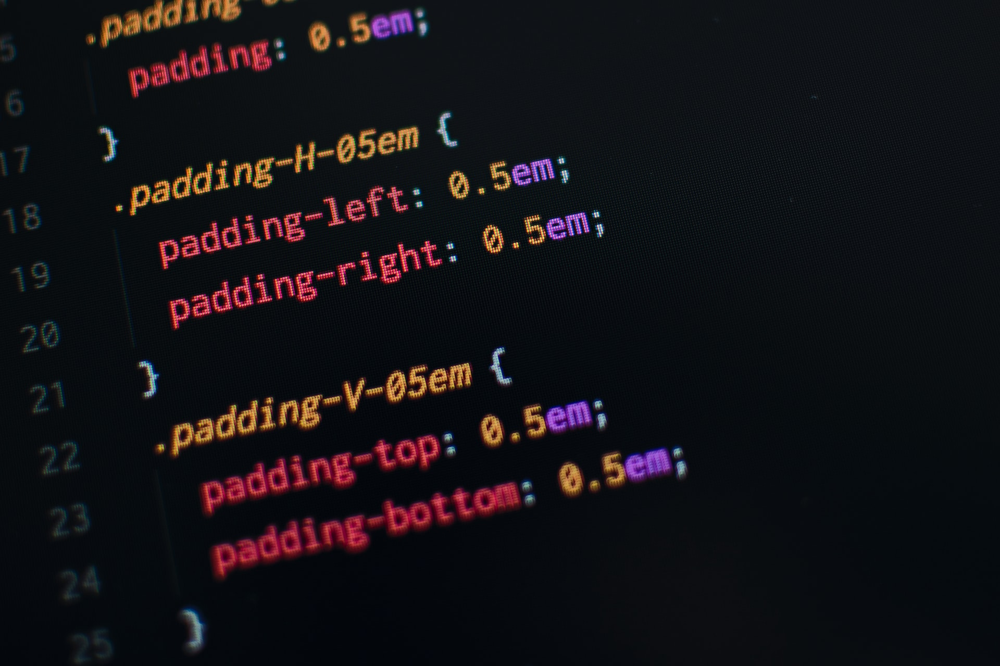

CSS란? Cascading Style Sheets(CSS)는 HTML이나 XML(XML의 방언인 SVG, XHTML 포함)로 작성된 문서의 표시 방법을 기술하기 위한 스타일 시트 언어입니다. CSS는 요소가 화면, 종이, 음성이나 다른 매체 상에 어떻게 렌더링되어야 하는지 지정합니다. CSS는 오픈 웹의 핵심 언어 중 하나이며, W3C 명세가 다양한 브라우저의 표준으로 작동하고 있습니다. 과거에는 CSS 명세의 다양한 부분을 순차적으로 개발했으므로 CSS1, CSS2.1, CSS3처럼 버전을 붙이는 것이 가능했습니다. 그러나 공식 버전이 CSS4로 올라가지는 않을 것입니다. CSS3 이후, CSS 명세의 범위가 엄청나게 넓어짐에 따라 여러 CSS 모듈 사이의 차이도 너무나 커졌습니다. 그래서 이제는 권고안을 모듈별로 개발하고 공개하는 것이 더 효과적인 상황입니다. 이제 W3C는 CSS 명세의 버전을 올리지 않고, 대신 주기적으로 CSS 명세 안정판의 스냅샷을 생성하고 있습니다. 
1.여는 태그(Opening tag): 이것은 요소의 이름과(이 경우 p), 열고 닫는 꺽쇠 괄호로 구성됩니다. 요소가 시작(이 경우 단락의 시작 부분)부터 효과가 적용되기 시작합니다. 2.닫는 태그(Closing tag): 이것은 요소의 이름 앞에 슬래시(/)가 있는것을 제외하면 여는 태그(opening tag)와 같습니다. 이것은 요소의 끝(이 경우 단락의 끝 부분)에 위치합니다. 닫는 태그를 적어주지 않는 것은 흔한 초심자의 오류이며, 이것은 이상한 결과를 낳게됩니다. 3.내용(Content): 요소의 내용이며, 이 경우 단순한 텍스트이다. 4.요소(Element): 여는 태그, 닫는 태그, 내용을 통틀어 요소(element)라고한다.